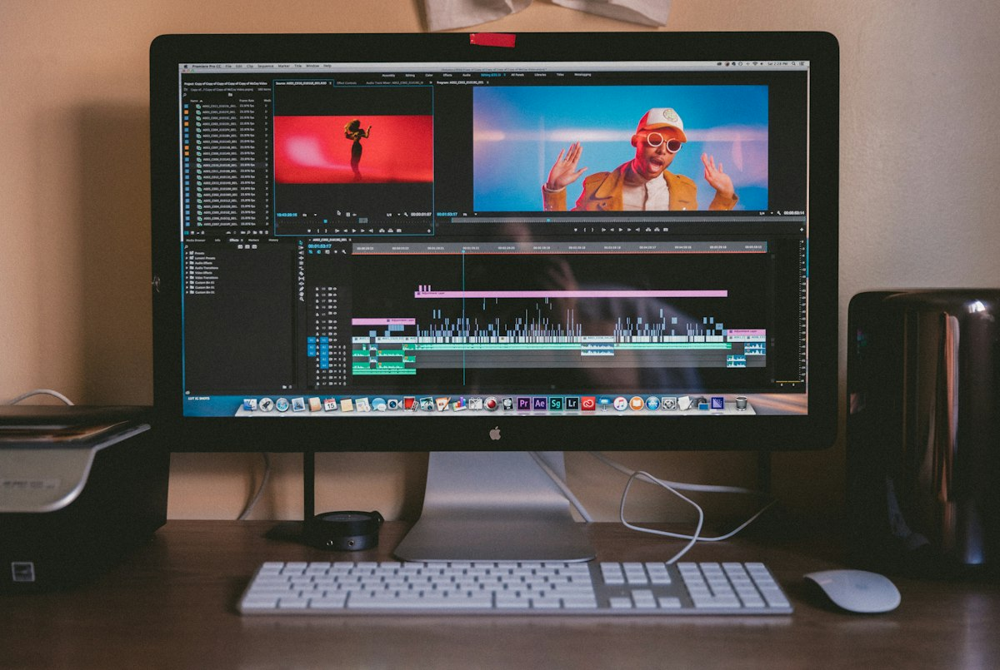

A Beginner’s Guide to Creating Your First AI Video
Category: video | Language: en
Artificial Intelligence has transformed video production from a high-budget professional endeavor into a creative outlet accessible to anyone with a computer. For beginners, AI video tools remove the need for expensive cameras, lighting rigs, or complex editing software like Adobe Premiere Pro. Whether you are a small business owner looking to create social media ads, a teacher making educational content, or a hobbyist exploring digital art, AI allows you to generate moving images simply by typing descriptions or uploading photos. This guide will walk you through the essential concepts and steps to start creating your own high-quality video clips using modern generative tools.
To begin, it is important to understand the three primary types of AI video generation. The first is 'Text-to-Video,' where you type a detailed description (a prompt) and the AI builds a scene from scratch. The second is 'Image-to-Video,' where you provide a still photo and the AI animates it, adding movement to clouds, water, or characters. The third is 'AI Avatars,' often used for business presentations, where a digital human figure speaks a script you provide with realistic lip-syncing. Each method serves a different purpose: text-to-video is best for imaginative or cinematic scenes, while avatars are ideal for tutorials and corporate communication.
Choosing the right tool is your first practical step, and the market is currently divided into two main categories. For cinematic and artistic clips, platforms like Runway (Gen-3), Luma Dream Machine, and Kling AI are leading the industry. These tools usually operate on a 'freemium' model, offering a few free credits to start, followed by monthly subscriptions ranging from $10 to $95. For professional 'talking head' videos, tools like HeyGen or Synthesia are the standard. Be aware that menu names and layouts change frequently as these websites update their interfaces, but you will generally look for a button labeled 'Create Video' or 'Generation Frame' to get started.
The quality of your AI video depends almost entirely on your 'prompting' skills. A common mistake for beginners is being too vague; typing 'a car driving' will likely result in a blurry or generic clip. Instead, you should provide specific details including the subject, the action, the environment, the lighting, and the camera angle. For example, a high-quality prompt would be: 'A vintage red convertible driving along a coastal highway at sunset, cinematic lighting, 4k resolution, drone shot from above.' By specifying the lighting and the camera perspective, you give the AI a clear blueprint, which significantly reduces the chance of generating a distorted or messy image.
Once you have entered your prompt, most advanced tools offer 'Motion Controls' to refine the output. These settings allow you to dictate how much movement occurs in the scene. A 'Motion Slider' set to a high value might create a fast-paced, chaotic action sequence, while a low value is better for subtle movements like a flickering candle or a breathing character. Some platforms also feature a 'Motion Brush,' which lets you paint over a specific area of an image—such as a waterfall—to tell the AI exactly which part of the frame should move while keeping the rest of the scene still. Experimenting with these settings is the best way to move from random generations to intentional storytelling.
Let’s look at a practical scenario: creating a 5-second promotional clip for a fictional coffee shop. First, you might take a high-quality photo of a latte on a wooden table and upload it to an Image-to-Video tool. Using the 'Motion Brush,' you would highlight the steam rising from the cup. You then add a text prompt like 'gentle steam rising, soft morning sunlight through a window.' After clicking generate, the AI processes the pixels to create a realistic loop of moving steam. To finish the project, you could take this 5-second clip into a free mobile editor like CapCut to add background music and a text overlay with your shop's name and address.
While the technology is impressive, beginners should be aware of current limitations and common 'hallucinations.' AI often struggles with complex physics, such as realistic human walking cycles, or fine details like the correct number of fingers on a hand. You may also find that text within a video often appears as gibberish. To avoid frustration, keep your initial clips short—usually 4 to 10 seconds—and focus on scenes with simple movements. If a generation looks strange, it is often better to adjust your prompt and try again rather than trying to fix a broken video in an editing suite; this process of trial and error is a normal part of the AI workflow.
Safety and ethics are paramount when using these powerful tools. Most reputable AI platforms have strict filters to prevent the creation of 'deepfakes' or non-consensual imagery of real people. It is your responsibility to use AI ethically by not attempting to impersonate public figures or spread misinformation. Furthermore, be cautious of websites that ask for your credit card information for 'unlimited' free video generation, as these are often scams; legitimate tools have clear pricing structures and usage limits. Finally, remember that copyright laws regarding AI-generated content are still evolving, and in many regions, you may not be able to claim full legal ownership of an AI-generated clip.
To move forward, your best next step is to sign up for a free account on a platform like Luma Dream Machine or Runway. Start by uploading a single landscape photo from your phone and using the 'Image-to-Video' feature to see how the AI interprets movement. Do not worry about creating a masterpiece on your first try; the goal is to learn how the AI responds to different instructions. As you become comfortable with the basic controls, you can begin stitching multiple clips together to tell a longer story. The world of AI video is moving fast, but by mastering the basics of prompting and motion control today, you will be well-prepared for the future of digital creativity.